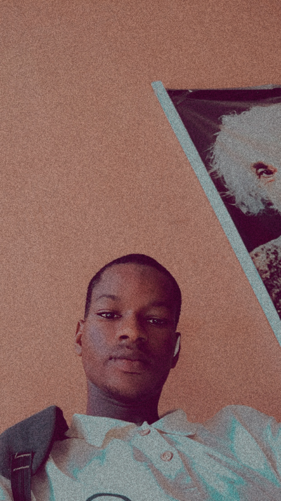

📸 Photo Gallery

Today I turn !
It all started in Ijeun-titun,Abeokuta,Ogun State. Where I was born. I was surrounded by family and friends who instilled in me a Love for Technology. My childhood was filled with memories and experiences that shaped me into the person i am today.
My parents and siblings played a significant role in my upbringing. They supported and encouraged me to pursue my dreams and instilled in me valuable life skills.
Some of my most formative experiences include (learning, gaming, and more). These experiences taught me important lessons that have stayed with me to this day.
Looking back, I realize that my upbringing laid the foundation for my future successes and challenges. it shaped my perspective, values, and goals, and prepared me for the journey ahead.
I’m currently studying Computer Engineering, at the Federal polytechnic Ilaro (National Diplomma). And looking forward to a Degree award(Bachelor in Technology).
An Aspiring frontend developer, web developer, and a mobile device Technician